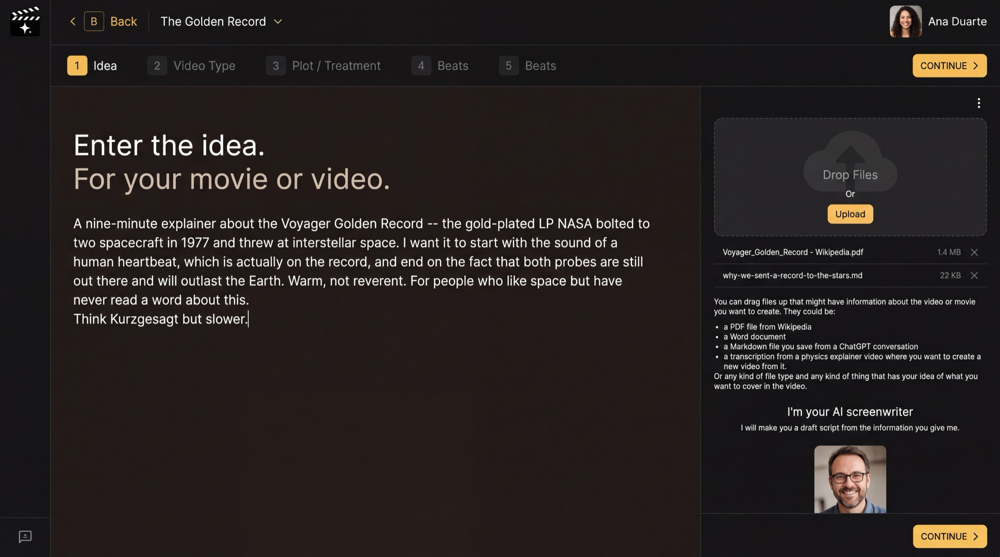

Step 2 of 8
Enter your idea
Tell the AI Screenwriter what your film is about, in your own words. Type the idea in the big box, and drop any files that carry it. Then click CONTINUE ›.

Idea: type on the left, drop files on the right.
What this page is
Enter the idea. For your movie or video. This is the only thing the AI Screenwriter needs from you to start. Write it the way you would pitch it to a friend: what it is about, how it should start and end, the feeling you want, and who it is for.
Write a useful idea
- Say the length and form if you know them ("a nine-minute explainer", "a feature film").
- Name the opening image and the ending you want. A writer builds toward an ending.
- Give the tone in a few words ("warm, not reverent") and a film or channel it should feel like.
Files help
On the right, Drop Files or press Upload. A Wikipedia PDF, a Word document, a saved ChatGPT conversation or a transcript of a video all work. The AI reads them for facts and names, so your text box can stay short.
Why you go next to Video Type
The same idea makes a very different script as a TV commercial or as a feature film. The next page tells the AI which one you are making.